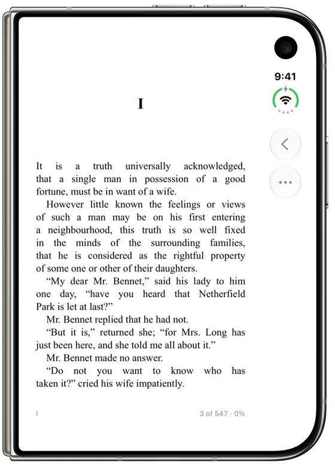
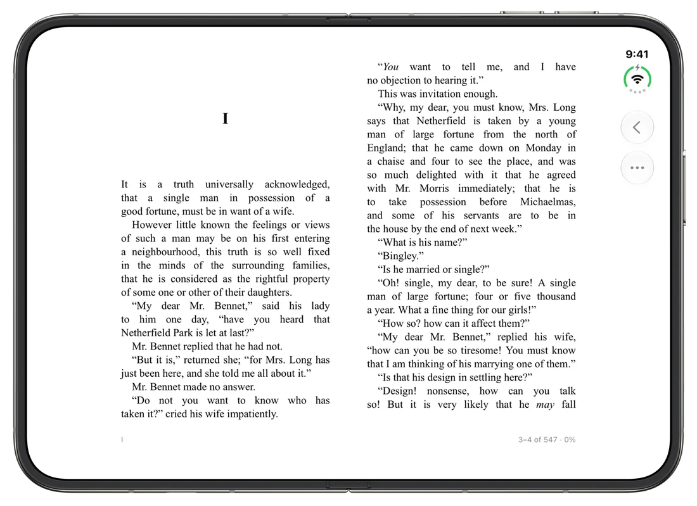
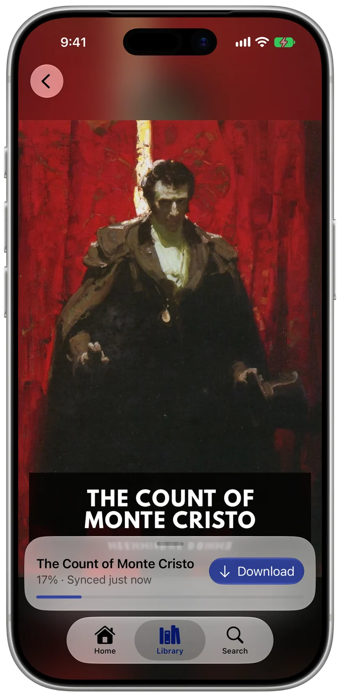
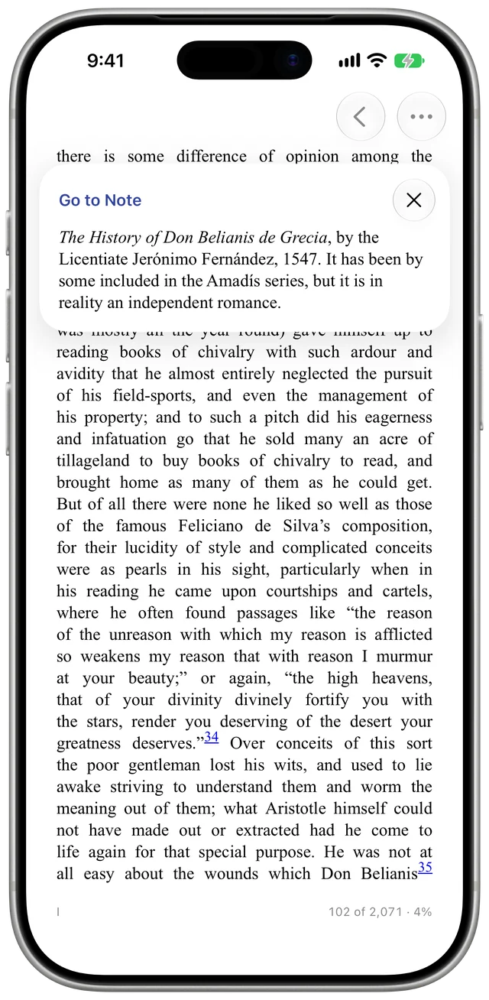
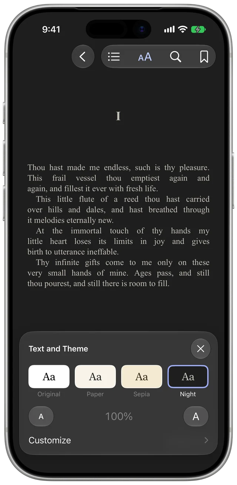
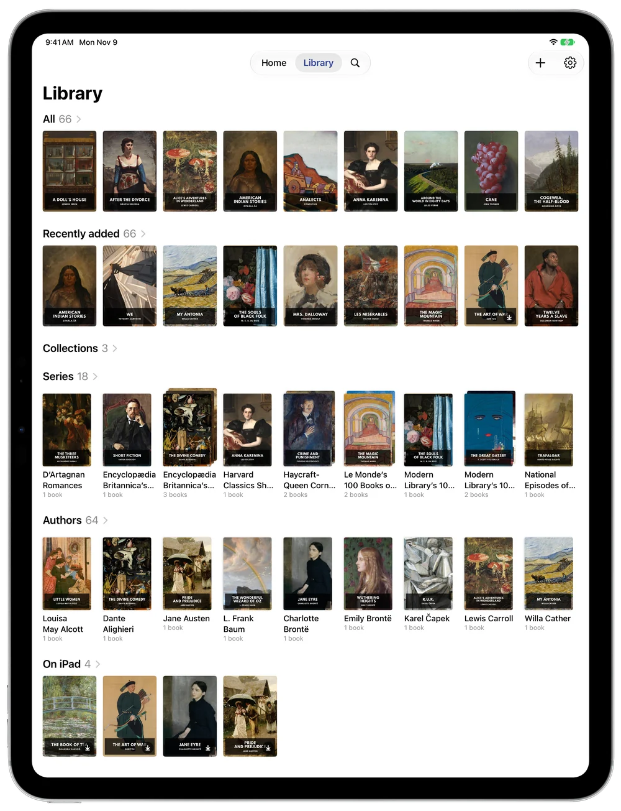
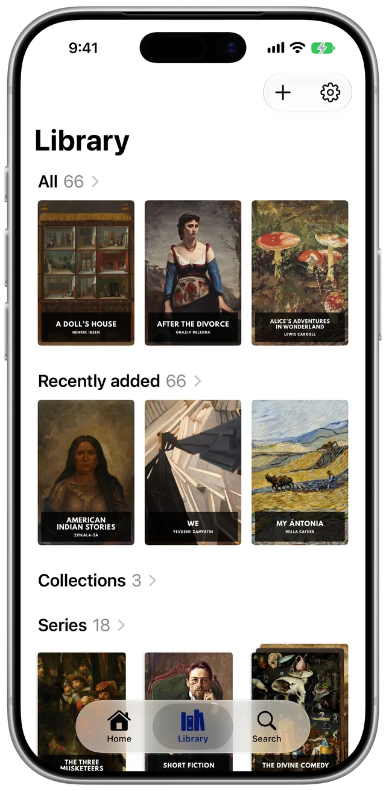

Opens like a book
One page folded, two pages open, and a real spread with a shadow at the spine when half open. Your place holds as you move between them.



Keeps your place
With BookOrbit, your place stays synced with its web reader and other apps. With KOReader sync, EPUBs keep their place with KOReader on your other devices.

Lets you look something up
Jump to a map or a glossary, then tap back. Your place doesn't move until you settle somewhere new. Footnotes open over the page.

Reads your way
Four themes, fonts, text size, line spacing, margins and page turns. Contents, bookmarks and search in the book, and a scrubber that zooms in to one page at a time.
Works with
BookOrbit
Your library, with your place and bookmarks synced.
OPDS catalogs
Browse, search and download. Checked against Calibre-Web, COPS, Kavita and Komga.
Files
Import EPUB, MOBI, AZW3 or FB2, or open them in Octavo from another app.
KOReader sync
Your place in EPUBs, kept with KOReader on your other devices.
Add as many servers and catalogs as you like. Octavo doesn't sell books or come with a catalog, and it can't open files with DRM, PDFs or comics.
On iPhone and iPad too
Built for iPhone Duo first. The same app runs on any iPhone or iPad.


Private
Books and sign-ins stay between your device and your server. Passwords go in the Keychain, plain http only goes to home and VPN addresses, and self-signed certificates work once you trust them.